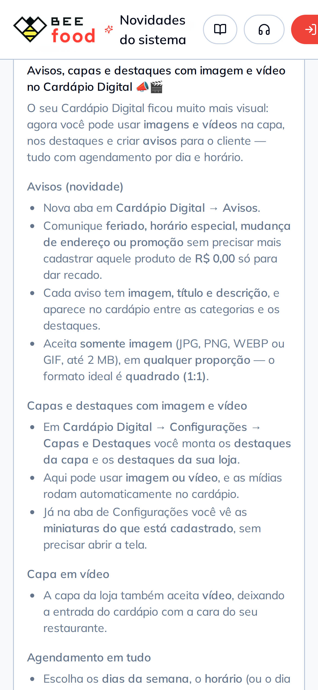

<!-- CTA com um pedido só: subir a primeira mídia. O caminho de menu aparece
     agora, no fim, quando o leitor já quer saber onde fica.

     O celular está sozinho na faixa: centralizado, sangrando pela base.

     Título sem emoji: "hoje" já é o vermelho do slide. O único emoji do
     carrossel está no rótulo do cartão do slide 2, onde não disputa com
     grifo nenhum. -->
<div class="slide slide--capa">
  <div class="topo">
    <span class="logo"></span>
    <span class="contador">7 de 7</span>
  </div>

  <div class="pilha g24" style="margin-top: 44px; max-width: 900px">
    <span class="chapeu">Já está no ar para você</span>
    <h2 class="titulo titulo--pequeno">
      Sobe o primeiro vídeo <span class="destaque">hoje</span>
    </h2>
    <p class="subtitulo">
      Comece pelo que mais sai da sua cozinha. Novidades em
      <b>beefood.app/novidades</b>.
    </p>
    <span class="caminho">Cardápio Digital → Configurações → Capas e Destaques</span>
  </div>

  <div class="sangria" style="top: 660px; left: 50%; transform: translateX(-50%);
                              width: 600px">
    <div class="celular" style="width: 600px">
      <div class="celular__tela">
        
      </div>
    </div>
  </div>
</div>
